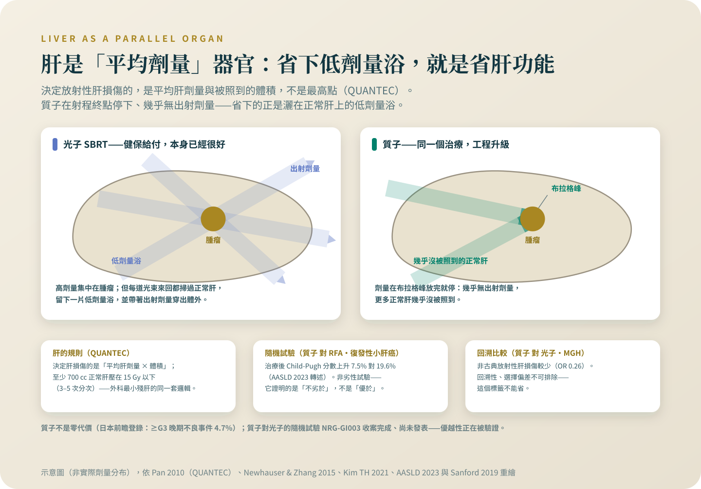

質子在肝癌：升級的理由與現況
肝是平均劑量器官，質子沒有出射劑量——機轉在肝臟特別成立。試驗走到哪一步、成人全自費的價格查得到什麼，這篇全部攤開。
一個 144 人的隨機試驗證明質子局部控制不劣於燒灼、肝功能惡化較少；光子對質子的隨機試驗收案完成、尚未發表。所以是三句話：有理由期待、有一個非劣性隨機試驗、優越性正在被驗證——每一句都不能多。
「質子是不是比較好？」在肝癌的診間，我的答案固定是三句話：有理由期待、有一個非劣性隨機試驗、優越性正在被驗證。這一篇把三句話背後的東西攤開。質子的物理原理與台灣的法規現況，我在站上寫過完整的兩篇——〈質子：打得準，然後呢〉與〈質子治療真的比較好嗎〉——這裡不重寫，只講肝癌這一題。
先說我的位置：肝癌的立體定位放射治療與質子治療，是我自己執行、而且多數要自費的治療——這個專題比較的另一邊，是別科同事的手術和燒灼。所以每一個比較我都附上原始文獻，讓你可以拿著它去外科和腸胃科聽第二意見；聽完再決定，是我建議的流程，不是讓步。
先把地基講清楚：光子 SBRT 已經很好
談升級之前，基本款要先站得住——這不是客套話，是質子論證的地基。光子 SBRT 在肝癌有健保給付的正式位置（代碼 37047B：單一病灶、五公分以內、Child-Pugh A 至 B、不適合或曾失敗於手術、栓塞、燒灼）[1]；前瞻試驗在小腫瘤的成績非常好：五公分以內（中位 1.3 公分）、不適合根治性治療的族群，兩年局部控制 100%、五年 97.1%[2]；合併分析的原發性肝腫瘤兩年局部控制 89%[3]；晚期肝癌加上 SBRT，也有隨機試驗讀出的無惡化存活改善[4]。這些數字的完整脈絡在〈SBRT 為什麼行，什麼時候不行〉，三條路的分工在〈小顆肝癌的三條路〉，這裡都不重比。如果光子已經把你這一格的問題解決得很好，質子是同一個治療的工程升級——同一個治療、更好的劑量分布——而升級的價值，要靠下面這件事成立。
為什麼偏偏是肝臟：平均劑量器官，遇上沒有出射的射線
肝臟的劑量邏輯是「平均劑量與體積說了算」——決定肝損傷的不是最高點的劑量，是整片肝總共吃了多少[5]。質子的物理特性剛好對到這一點：它在射程終點（布拉格峰）放完能量就停下來，幾乎沒有出射劑量[6]——省下的正是光子穿過腫瘤之後灑在正常肝上的那片低劑量浴。在多數器官，低劑量浴是次要問題；在肝臟，它直接換算成肝功能。一份用神經網路模型分析肝癌病人劑量分布與治療後肝功能的研究（117 位建模、88 位外部驗證），結論指名了這件事：低劑量浴、以及它與基線肝功能不佳的交互作用，是預測肝功能惡化的關鍵[7]。機轉這一層，質子在肝臟的理由比在多數部位都硬。

那個隨機試驗證明的是「不劣於」，不是「優於」
韓國國家癌症中心做了質子對 RFA 的第三期隨機試驗，收的是復發性或殘餘、不到三公分、兩顆以內的肝癌，共 144 人。它是非劣性設計——事先問的問題是「質子有沒有比 RFA 差超過 15 個百分點」，不是「誰比較好」。結果非劣性達標：兩年局部無惡化存活，依計畫書分析質子 94.8% 對 RFA 83.9%（差 10.9 個百分點，90% 信賴區間 1.8 到 20.0——信賴區間是這個估計合理的擺盪範圍），意向治療分析 92.8% 對 83.2%（差 9.6 個百分點，90% 信賴區間 0.7 到 18.4）[8]。數值方向偏質子，連信賴區間的下界都在零以上；但試驗回答的問題是非劣性，所以它證明的是不劣於——寫成「質子優於 RFA」就是超過，我不那樣寫。這個試驗還有一個細節我特別想講：被隨機分到 RFA、卻因技術上做不到而改做質子的有 19 人，反方向只有 6 人[8]——「RFA 打不到的位置」不是抽象概念，它在一個隨機試驗裡真實地發生了。AASLD 2023 轉述這個試驗時補了一個數字：治療後 Child-Turcotte-Pugh 分數上升的比例，質子 7.5% 對燒灼 19.6%[9]。
回溯資料的方向，與它們該貼的標籤
光子對質子，目前只有回溯性比較。麻州總醫院 133 位不可切除肝癌（其中質子 49 人）：質子與較佳的存活相關——校正後風險比 0.47（風險比是把兩組死亡發生的速度相除），中位存活 31 對 14 個月——非古典放射性肝損傷也較少；局部復發沒有差別，作者自己的解讀是存活差異可能來自肝失代償較少[10]。回溯性、選擇偏差無法排除——這個標籤不能省。前瞻的單臂資料有日本多中心登錄的 576 位初次接受質子的肝癌：中位存活 48.8 個月、三年局部控制 90%、第 3 級以上晚期不良事件 4.7%；存活與腫瘤大小、Child-Pugh 分級、腫瘤與腸胃道的距離顯著相關[11]——質子也逃不掉「肝功能是貨幣」這條規則。日本另一份初治、單顆五公分以內、Child-Pugh 8 分以內的傾向分數配對（質子對 RFA 各 83 人）：五年存活看不出差別[12]。台灣也有自己的系列：林口長庚體系 83 位門脈癌栓肝癌接受強度調控質子治療，中位存活 32.4 個月、兩年局部控制 88.8%、放射性肝損傷 9.3%——同樣是回溯性資料[13]。
正面對決的試驗收完案了，還沒讀出
光子對質子的隨機試驗只有一個：NRG-GI003，第三期、主要終點是整體存活。到我查證的 2026 年 8 月 30 日為止，它收案完成（115 人，主要完成日 2026 年 1 月 20 日）、沒有公開結果[14]。優越性正在被驗證——在它讀出之前，「質子比光子好」在肝癌沒有隨機證據可以引用，我也就不說它。
費用：成人全自費，查得到的我全放在這裡
健保從 2026 年（民國 115 年）1 月起新增三項質子放射治療給付項目，但適用範圍都限定「年齡未滿十九歲病人」[15]——成人的質子治療肝癌，全自費。官方查得到的價格只有一家：高雄長庚質子治療中心公告的收費標準，強度調控質子每次 21,750 到 34,500 元、呼吸調控每次加收 5,000 或 9,600 元，另有「質子立體定位放射治療（套組）」33 萬元，以及模具、模擬攝影、治療規劃等費用[16]。兩件事必須標明：這是該院公告、非肝癌專屬的套組，肝癌療程的總價取決於分次數與呼吸調控，不同醫院不同；其他醫院沒有可引用的官方公告，請直接向醫務課詢問。同一張桌上還要擺著另一個事實：光子 SBRT 健保有給付[1]，質子全自費。要不要為一個「不劣於已達標、優於還在驗證」的差距付這筆錢，答案在你的病灶位置、肝功能和家裡的財務現實裡，不在我的文章裡。
問質子之前，先備齊的三份資料
一、影像：你的腫瘤貼不貼血管、離腸胃道多遠、RFA 到底打不打得到——韓國試驗裡那 19 位做不成 RFA 的病人，卡的就是這一題。二、肝功能：Child-Pugh 的組成數字（見〈你同時有兩個病：肝癌與肝硬化〉）——肝功能越緊，省下低劑量浴的意義越大；但 8 分以上，連體外放射本身都應避免[9]。三、光子的治療計畫或評估意見：先讓你的放射腫瘤科醫師回答「光子計畫的正常肝平均劑量壓不壓得下來」，再談質子省下的劑量落在哪裡。然後帶著這篇文末的文獻——韓國試驗、GI003 的現況——去聽第二意見；三科各聽一次的流程，照〈小顆肝癌的三條路〉的建議走，符合移植準則的人再加問移植評估。質子再怎麼升級，它仍然是三條路裡「放射」那一條的工程改良，不是第四條路。
光子 SBRT 健保有給付、成績已經很好；質子是同一條路的工程升級，全自費。問質子之前，先請放射腫瘤科醫師回答「光子計畫的肝劑量壓不壓得下來」，再帶著韓國試驗的文獻去聽第二意見。
參考資料
衛生福利部中央健康保險署。全民健康保險醫療服務給付項目及支付標準（114 年 5 月 1 日生效版開放資料，37047B 身體立體定位放射治療）。
Yoon, S. M., Kim, S. Y., Lim, Y. S., et al. (2020). Stereotactic body radiation therapy for small (≤5 cm) hepatocellular carcinoma not amenable to curative treatment: Results of a single-arm, phase II clinical trial. Clinical and Molecular Hepatology, 26(4), 506–515. DOI: 10.3350/cmh.2020.0038
Ohri, N., Tomé, W. A., Méndez Romero, A., et al. (2021). Local Control After Stereotactic Body Radiation Therapy for Liver Tumors. International Journal of Radiation Oncology, Biology, Physics, 110(1), 188–195. DOI: 10.1016/j.ijrobp.2017.12.288
Dawson, L. A., Winter, K. A., Knox, J. J., et al. (2025). Stereotactic Body Radiotherapy vs Sorafenib Alone in Hepatocellular Carcinoma: The NRG Oncology/RTOG 1112 Phase 3 Randomized Clinical Trial. JAMA Oncology, 11(2), 136–144. DOI: 10.1001/jamaoncol.2024.5403
Pan, C. C., Kavanagh, B. D., Dawson, L. A., et al. (2010). Radiation-associated liver injury. International Journal of Radiation Oncology, Biology, Physics, 76(3 Suppl), S94–S100. DOI: 10.1016/j.ijrobp.2009.06.092
Newhauser, W. D., & Zhang, R. (2015). The physics of proton therapy. Physics in Medicine and Biology, 60(8), R155–R209. DOI: 10.1088/0031-9155/60/8/R155
Chamseddine, I., Kim, Y., De, B., et al. (2023). Predictive Model of Liver Toxicity to Aid the Personalized Selection of Proton Versus Photon Therapy in Hepatocellular Carcinoma. International Journal of Radiation Oncology, Biology, Physics, 116(5), 1234–1243. DOI: 10.1016/j.ijrobp.2023.01.055
Kim, T. H., Koh, Y. H., Kim, B. H., et al. (2021). Proton beam radiotherapy vs. radiofrequency ablation for recurrent hepatocellular carcinoma: A randomized phase III trial. Journal of Hepatology, 74(3), 603–612. DOI: 10.1016/j.jhep.2020.09.026
Singal, A. G., Llovet, J. M., Yarchoan, M., et al. (2023). AASLD Practice Guidance on prevention, diagnosis, and treatment of hepatocellular carcinoma. Hepatology, 78(6), 1922–1965. DOI: 10.1097/HEP.0000000000000466
Sanford, N. N., Pursley, J., Noe, B., et al. (2019). Protons versus Photons for Unresectable Hepatocellular Carcinoma: Liver Decompensation and Overall Survival. International Journal of Radiation Oncology, Biology, Physics, 105(1), 64–72. DOI: 10.1016/j.ijrobp.2019.01.076
Mizumoto, M., Ogino, H., Okumura, T., et al. (2024). Proton Beam Therapy for Hepatocellular Carcinoma: Multicenter Prospective Registry Study in Japan. International Journal of Radiation Oncology, Biology, Physics, 118(3), 725–733. DOI: 10.1016/j.ijrobp.2023.09.047
Sekino, Y., Tateishi, R., Fukumitsu, N., et al. (2023). Proton Beam Therapy versus Radiofrequency Ablation for Patients with Treatment-Naïve Single Hepatocellular Carcinoma: A Propensity Score Analysis. Liver Cancer, 12(4), 297–308. DOI: 10.1159/000528537
Liu, C. M., Lai, C. H., Wang, Y. M., et al. (2025). Intensity-Modulated Proton Therapy for Hepatocellular Carcinoma with Portal Vein Tumor Thrombosis. Journal of Hepatocellular Carcinoma, 12, 2655–2670. DOI: 10.2147/JHC.S551113
ClinicalTrials.gov。NRG-GI003：光子對質子治療肝細胞癌之第三期隨機試驗（NCT03186898）試驗登錄頁。查閱日期 2026 年 8 月 30 日。
行政院公報（114 年 12 月 11 日健保醫字第 1140126650 號公告，自 115 年 1 月 1 日生效）。全民健康保險醫療服務給付項目及支付標準修正規定（36025B／36026B／36027B 質子放射治療）。
高雄長庚紀念醫院質子治療中心。收費標準。（頁面更新日 2026/03/27）
本文為一般性衛教說明，整理自公開發表的研究與官方公告，不能取代面對面的診療。研究結果適用的族群通常有嚴格條件，是否適用於你的情況，請與你的主治醫師討論。請勿依據本文自行調整、中斷或更換治療。
← 回到肝癌專題